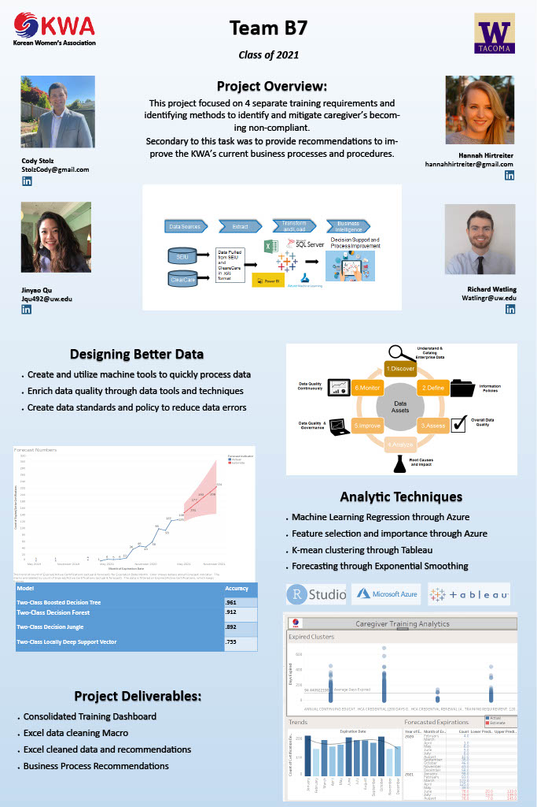

Our project team work with the Korean Women's Association (KWA) on identifing and mitigating caregiver compliance issues
Throughout the project, we worked with the KWA to leverage machine learning and statistical analysis to identify, assess,
and develop a methods to mitigate caregiver compliance issues and improve business processes for all stakeholders throughout the KWA.

Python and IBM Watson Studio used for data storage and ETL, exploratory data analysis, web scraping,
data processing and cleaning, visualization, development of machine learning models.

A look at the 2016 San Francisco Crime dataset hotseted via Kaggle with the goal of creating a dashboard to identify high crimes areas and influence executive staffing decisions

In this project I used R to create a machine learning model to identify good and bad creadit, and influence loan decisions

Using Tableau's global superstore data, I created a dashboard to show sales, returns, and profits with a focus on region.

Using the University of California, Wisconsin Breast Cancer Dataset, I used various Machine Leanring techniques to develop a
model to predict breast cancer.